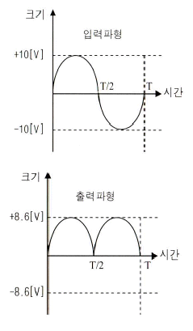
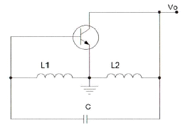
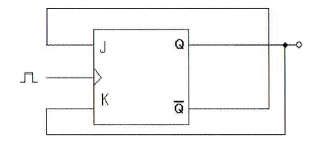
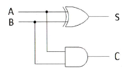
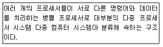

방송통신기사 (2014-10-04 기출문제)
1과목: 디지털 전자회로
1. 정류회로의 부하에 병렬로 콘덴서를 연결한 용량성 평활회로의 경우 부하저항이 감소하면 리플 전압은 어떻게 변화하는가?
- 리플이 증가한다.
- 리플이 감소한다.
- 리플의 증가와 감소가 반복한다.
- 변화가 없다.
(정답률: 68%)

2. 다음 중 스위칭 정전압 회로에 대한 설명으로 틀린 것은?
- 스위칭 정전압 회로는 직렬 정전압 회로에 비하여 소형ㆍ경량이나, 트랜지스터의 컬렉터 손실이 크게 되어 효율성이 나쁘다.
- 스위칭 정전압 회로를 흔히 SMPS(Switching Mode Power Supply)라고 부르기도 한다.
- 직렬 정전압 회로와 차이점은 제어 트랜지스터가 연속적인 전류를 흘리는 것이 아니라 단속(On-Off)적으로 전류를 흘린다.
- 스위칭 트랜지스터의 이미터에 흐르는 전류는 펄스 형태로 나타난다.
(정답률: 55%)
3. 다음 중 아래 그림과 같은 입ㆍ출력 파형 특성을 만족시키는 정류 회로는? (단, 다이오드의 장벽전압은 0.7[V]이고, 변압기의 권선비는 1:1로 가정한다.)

- 반파정류회로
- 중간탭 전파정류회로
- 브리지 전파정류회로
- 용량성 필터를 갖는 반파정류회로
(정답률: 54%)
4. 다음 중 영 바이어스(Zero Bias)된 B급 푸시풀(Push-Pull) 증폭기에서 발생되는 왜곡의 원인으로 가장 적합한 것은?
- 주파수 일그러짐
- 진폭 일그러짐
- 교차 일그러짐
- 위상 일그러짐
(정답률: 47%)
5. 다음 중 이상적인 연산증폭기에 대한 설명으로 틀린 것은?
- 입력 임피던스는 무한대(∞)이다.
- 출력 임피던스는 0이다.
- 공통모드제거비(CMRR)는 0이다.
- 대역폭이 무한대(∞)이다.
(정답률: 47%)
6. 전압이득이 40[dB]이고 차단주파수가 400[kHz]인 개루프(Open Loop) 증폭기에 부궤환 회로를 사용하여 전압이득이 20[dB]로 감소되었을 경우 폐루프(Closed-Loop) 증폭기의 차단주파수는?
- 800[kHz]
- 600[kHz]
- 400[kHz]
- 200[kHz]
(정답률: 44%)
7. 다음 중 전치 증폭기에 대한 설명으로 틀린 것은?
- 출력신호를 1차 증폭시킨다.
- 초기신호를 정형한다.
- 고출력 증폭용으로 사용된다.
- 일반적으로 종단 증폭기에 비해 중폭률이 낮다.
(정답률: 49%)
8. 다음 중 발진회로를 구성하는 요소가 아닌 것은?
- 위상천이회로
- 정궤환회로
- RC타이밍회로
- 감쇄회로
(정답률: 59%)
9. 다음 그림과 같은 회로에서 결합계수가 0.5이고, 발진주파수가 200[kHz]일 경우 C의 값은 얼마인가? (단, π=3.14이고, L1=L2=1[mH]로 가정한다.)

- 211.3[μF]
- 211.3[pF]
- 422.6[μF]
- 422.6[pF]
(정답률: 50%)
10. 다음 중 단측파대 변조 방식의 특징으로 틀린 것은?
- 점유주파수 대역폭이 매우 작다.
- 복조를 할 경우 반송파의 동기가 필요하다.
- 송신출력이 비교적 적어도 된다.
- 전송 도중에 복조되는 경우가 있다.
(정답률: 55%)
11. 다음 중 디지털 변조방식에 대한 설명으로 틀린 것은?
- ASK 방식은 반송파의 진폭을 변화시키는 방식으로 장거리 및 대용량 전송에는 적합하지 않다.
- FSK 방식은 방송파의 주파수를 변화시키는 방식으로 전송로의 영향을 많이 받기 때문에 전송로 상태가 열악한 통신에는 적합하지 않다.
- PSK 방식은 반송파의 위상을 변화시키는 방식으로 심볼에러가 우수하고 전송로 등에 의한 레벨 변동에 영향을 적게 받는다.
- QAM 방식은 반송파의 진폭과 위상을 상호 변환하여 싣는 방식으로 제한된 전송 대역 내에서 고속 전송에 유리하다.
(정답률: 54%)
12. 다음 중 단안정 멀티바이브레이터에 대한 설명으로 틀린 것은?
- 두 증폭단 사이에 AC 결합과 DC 결합이 함께 쓰인다.
- 회로의 시정수로 주기가 결정된다.
- 정상 상태에서 한 개의 TR이 On이면 다른 TR은 Off이다.
- 1개의 펄스가 인가되면 2개의 안정상태를 유지한다.
(정답률: 52%)
13. 다음 중 펄스에 대한 설명으로 틀린 것은?
- 짧은 시간에 전압 또는 전류의 진폭이 급격하게 변화하는 파형이다.
- 충격파, 직사각형파, 톱니파, 계단파 등이 있다.
- 전아이나 전류의 성분이 양인 양(+)펄스와 음인 음(-)펄스가 있다.
- 펄스에는 고조파가 포함되지 않는다.
(정답률: 59%)
14. JK Flip Flop을 그림과 같이 결선하였을 경우 클럭 펄스가 인가될 때마다 Q의 출력상태는 어떻게 동작하는가?

- Toggle
- Reset
- Set
- Race 현상
(정답률: 59%)
15. 다음 중 부울대수의 정리가 성립되지 않는 것은?
- A+B=B+A
- AㆍB=A(A+B)
- A(B+C)=AB+AC
- A+(BㆍC)=(A+B)(A+C)
(정답률: 60%)
16. 2진수 1110을 2의 보수로 변환한 것으로 맞는 것은?
- 1010
- 1110
- 0001
- 0010
(정답률: 61%)
17. 비동기식 5진 계수회로는 최소 몇 개의 플립플롭이 필요한가?
- 4
- 3
- 2
- 1
(정답률: 62%)
18. 다음 그림의 회로명칭은 무엇인가?

- 반가산기
- 반감산기
- 전가산기
- 전감산기
(정답률: 62%)
19. 10진 BCD 코드를 LED 출력으로 표시하려면 어떤 디코더 드라이브가 필요한가?
- BCD-10세그먼트
- Octal-10세그먼트
- BCD-7세그먼트
- Octal-7세그먼트
(정답률: 69%)
20. 다음 중 디지털 컴퓨터(Digital Computer)의 보조 기억장치가 아닌 것은?
- 자기 드럼(Magnetic Drum)
- 자기 테이프(Magnetic Tape)
- 자기 디스크(Magnetic Disk)
- 자기 코어(Magnetic Core)
(정답률: 68%)
2과목: 방송통신 기기
21. 다음 중 정밀하고 반복된 컬러바(Color Bar) 신호를 만드는 장비는?
- TV 패턴신호 발생기
- 웨이브폼 모니터
- 벡터스코프
- 스펙트럼 아날라이저
(정답률: 85%)
22. 현재의 HDTV보다 해상도가 4배 이상 높으며, 4G 서비스와 더불어 새로운 멀티미디어 서비스의 한 축으로 발전할 방송서비스는?
- UHD TV
- 홀로그래픽
- 3DTV
- SDTV
(정답률: 81%)
23. 다음 중 연주소에서 송신소로 신호를 전송하는 TV방송 시스템과 가장 관계가 깊은 것은?
- TSL
- 동기신호 발생기
- STL
- VMU
(정답률: 84%)
24. FM 라디오 방송엔 88~108[MHz]의 주파수대역에서 주파수 편이량이 72[kHz]일 때 FM 방송의 변조지수는? (단, 신호파 주파수는 4[kHz]를 가정한다.)
- 10
- 15
- 18
- 20
(정답률: 74%)
25. 위성 통신의 다원접속방식 중 다수의 사용자에게 일정한 시간 간격으로 방송 통화로를 제공하는 방식은?
- FDMA(Frequency Division Multiple Access)
- TDMA(Time Division Multiple Access)
- CDMA(Code Division Multiple Access)
- SDMA(Space Division Multiple Access)
(정답률: 82%)
26. 아날로그 NTSC 컬러TV 방식에서 I화면의 주사선수가 525일 때, 1초간 30장의 화면이 송출이 다면 수평주사주파수는 얼마인가?
- 60[Hz]
- 525[Hz]
- 15,750[Hz]
- 4.5[Hz]
(정답률: 77%)
27. 다음 중 스튜디오에서 사용되는 제작 설비가 아닌 것은?
- VTR
- FSS
- CG
- STL
(정답률: 73%)
28. 다음 중 위성 방송 수신 시스템의 주요 부분과 거리가 먼 것은?
- 안테나
- 저잡음 변환기(LNB)
- 위성 방송 수신기
- 트랜스폰더(Transponder)
(정답률: 66%)
29. 오디오 신호 기준에서 0[dBm]이라 함은 몇[Ω]의 저항을 가진 전화선에 0.775[V] 전압을 보냈을 때 1[mW]의 전력을 소비하는 것을 의미하는가?
- 100[Ω]
- 300[Ω]
- 600[Ω]
- 1,000[Ω]
(정답률: 65%)
30. 다음 중 영상 종합 측정기(Video Measurement Set)에 대한 설명으로 옳지 않은 것은?
- 영상 모니터를 수동이나 자동으로 측정할 수 있다.
- CSO/CTB 상호변조를 측정할 수 있다.
- 기저대역 영상 및 음성 신호에 대한 측정치를 화면으로 나타내다.
- 그래프 모드로 상세한 분석을 할 수 있다.
(정답률: 71%)
31. 다음 중 카메라맨이 촬영하는 화면을 보면서 모니터할 수 있도록 카메라에 붙은 작은 TV화면을 무엇이라 하는가?
- View Finder
- Routing Switcher
- Prompter
- Plumbicon
(정답률: 87%)
32. 방송 및 업무용 디지털 오디오장비에 사용되는 대표적인 2채널 직렬 Digital Interface는 무엇인가?
- SDI
- IEEE1394
- AES/EBU
- SDDI
(정답률: 84%)
33. 다음 중 아날로그 스펙트럼 분석기에서 측정할 수 없는 것은?
- AM변조도
- FM편이
- 주파수 대역폭
- 에러벡터크기(EVM)
(정답률: 71%)
34. 다음 인터넷 텔레비전 방송 장비 중 영상입력 장비와 관계없는 것은?
- 디코딩 장치
- 비디오 녹화기
- 그래픽 편집기
- 디지털 편집 장비
(정답률: 65%)
35. TV신호의 수평주사선수가 1,⑤0인 화면의 종횡비가 9:16일 때, 최고 주파수는? (단, 초당 프레임 수는 30)
- 4.5[MHz]
- 19.5[MHz]
- 5.5[MHz]
- 29.4[MHz]
(정답률: 73%)
36. 아날로그 케이블 방송 채널 4번의 경우 채널의 폭이 66[MHz]~72[MHz]라 할 때, 영상반송파와 음성반송파의 주파수를 바르게 나타낸 것은?
- 67.25[MHz], 71.75[MHz]
- 66[MHz], 67.25[MHz]
- 72[MHz], 66[MHz]
- 67.25[MHz], 72[MHz]
(정답률: 80%)
37. 광섬유 케이블은 물질 사이에서 일어나는 빛의 어떤 성질을 이용한 것인가?
- 전반사
- 회절
- 파동성
- 입자성
(정답률: 86%)
38. 다음 중 홀로그래피에 대한 설명으로 틀린 것은?
- 지각원리(Preception)에 근거하지 않고 물리적인 법칙에 근거한 어지러움 없는 시청 환경의 3D 표현장치이다.
- 시점의 제한 없이 실제로 사람이 보고 느끼는 영상과 유사한 정보를 제공한다.
- 기존 영상기술을 획기적으로 대체할 수 있는 기술이다.
- 전반사 기술을 이용하여 좌우의 눈에 서로 다른 영상을 투영하는 기술이다.
(정답률: 83%)
39. 다음 중 인터넷방송을 위한 실시간 전송회선으로 적당하지 않은 것은?
- PSTN
- xDSL
- HFC
- FTTx
(정답률: 65%)
40. 다음 중 공동주택의 수신설비에 대한 설명으로 옳은 것은?
- 안테나 수신점 설비는 세대분배기함, MATV 분배기 또는 CATV 분배기, 직렬단자,직렬단자선로 등이 있다.
- 헤드앤드 설비는 분리기, 자동이득조정증폭기, 아날로그 신호처리기, 디지털 신호처리기 등이 있다.
- 공동구 간선설비는 각 채널별 수신안테나, 안테나신호 인입 전송선로, 보호기, 대역통과여파기, 전치증폭기 등이 있다.
- 세대인입설비는 MATV 간선증폭기 또는 CATV 간선증폭기, 전송선로설비, 동축 커넥터 등이 있다.
(정답률: 75%)
3과목: 방송미디어 공학
41. 다음 중 양자화 잡음에 관한 사항과 거리가 먼 것은?
- A/D 변환시 발생한다.
- 양자화 스텝이 클수록 양자화 잡음은 줄어든다.
- 양자화 신호대 잡음비는 입력신호의 크기에 따라 변화한다.
- 연속적인 신호를 불연속적인 신호로 변환시 발생하는 잡음이다.
(정답률: 68%)
42. 다음 중 Nyquist Filter에 대한 설명으로 틀린 것은?
- 대역이 제한된 주파수영역에서 심벌간 간섭이 발생하지 않는 이상적인 시간영역 파형은 Sinc함수 형태이다.
- Nyquist 필터는 점유대역폭이 가장 좁고(주파수 효율은 좋음), 시간영역에서 구현이 가능하다.
- 실제 통신시스템에서는 Raised Cosine Filter를 사용하여 r(Roll-Off Factor)값을 조정하여 사용한다.
- r(Roll-Off Factor)=0인 경우가 Nyquist Filter이다.
(정답률: 77%)
43. 휴대용 텔레비전 카메라와 비디오 녹화기 등을 함께 사용하여 뉴스의 현장취재를 가능하게 하는 시스템을 지칭하는 용어는?
- ENG
- CCU
- CCD
- EFP
(정답률: 86%)
44. 다음 중 민영방송사의 주요 재원에 해당되는 것은?
- 조세
- 시청료
- 광고료
- 등록세
(정답률: 90%)
45. 다음 중 소리의 요소인 음조(Pitch)에 관한 설명으로 옳은 것은?
- 진동체에 의하여 진동된 음파의 진폭의 대소를 말한다.
- 진동체에 의하여 진동된 1초간의 진동수의 대소를 말한다.
- 음의 맵시로 파형의 형태를 말한다.
- 공기의 소밀파로 매질의 진동방향과 파동이 나가는 방향과 일치하는 파를 말한다.
(정답률: 73%)
46. 어떤 음을 듣고 있을 때 이보다 진폭이 큰 음이 가해지면 원래의 음이 들리지 않는 것을 무엇이라고 하는가?
- 마스킹 효과
- 바이노럴 효과
- 칵테일 파티 효과
- 하스 효과
(정답률: 78%)
47. 에어컨을 가동하기 전 실내 음압레벨이 65[dB]이고 에어컨을 가동할 때의 실내 음압레벨이 72[dB]라면 에어컨 자체의 음압레벨에 가장 가까운 값은?
- 6[dB]
- 7[dB]
- 66[dB]
- 71[dB]
(정답률: 79%)
48. 다음 중 디지털방송에 사용되는 5.1채널의 주요 특징이 아닌 것은?
- 색감
- 음장감
- 후면 음상정위
- 센터 음상정위
(정답률: 81%)
49. 다음 중 음향 압축 파일과 관계가 없는 것은?
- ATRAC
- MP3
- TwinVQ
- 8-VSB
(정답률: 79%)
50. 우리나라 지상파 디지털 TV 방송의 오디오 압축방식 규격으로 적절한 것은?
- QPSK
- MPEG-3
- Dolby AC-3
- 8-VSB
(정답률: 82%)
51. 스튜디오 조명을 5K 조명기, 2K 조명기와 같이 분류할 때, “K”가 의미하는 것은?
- 색온도
- 크기
- 무게
- 전력용량
(정답률: 84%)
52. 다음 중 광파장의 차이에 의한 색채감각을 나타내는 것으로 색의 종류를 표시하는 것은?
- 명도
- 포화도
- 색상
- 감도
(정답률: 70%)
53. 음향신호에서 2[V]와 10[V]의 레벨차는 약 얼마인가?
- 8[dB]
- 14[dB]
- 18[dB]
- 22[dB]
(정답률: 81%)
54. 소리의 3요소에 해당하지 않는 것은?
- 강약
- 리듬
- 음조
- 음색
(정답률: 71%)
55. 신호를 전송함에 있어 일정한 시간 간격마다 신호 표본들로 전체 파형을 대신하게 하는 방법을 무엇이라고 하며, 수신측에서 원래 파형을 복구할 수 있도록 하는 최소한의 표본율을 무엇이라고 하는가?
- 용장(Redundancy), 나이퀴스트율(Nyquist Rate)
- 표본화(Sampling), 나이퀴스트율(Nyquist Rate)
- 용장(Redundancy), 에일리어싱(Aliasing)
- 표본화(Sampling), 에일리어싱(Aliasing)
(정답률: 82%)
56. 다음 중 ATSC(Advanced Television Systems Committee) 방식에 대한 설명으로 옳지 않은 것은?
- Carrier는 Multi-Carrier이다.
- 전송방식은 8-VSB이다.
- 압축방식으로 영상은 MPEG-2, 음향은 Dolby AC-3이다.
- MPEG-2 TS를 사용한다.
(정답률: 80%)
57. 다음 중 인물 조명에 대한 설명으로 잘못된 것은?
- 베이스 라이트 : 인물, 배경을 포함하여 전체에 균등한 밝기를 주는 확산 조명
- 필 라이트 : 키 라이트에 의해 생기는 어두운 부분을 수정하기 위한 조명
- 터치 라이트 : 수평선이나 배경의 세트에 액센트를 만들기 위한 조명
- 풋 라이트 : 인물의 정면 위쪽으로부터의 조명
(정답률: 80%)
58. MPEG 영상 데이터의 계층을 낮은 층부터 바르게 연결한 것은?
- Block - Macroblock - Slice - Picture
- Macroblock - Block - Slice - Picture
- Slice - Macroblock - Block - Picture
- Slice - Block - Macroblock - Picture
(정답률: 80%)
59. 지상파 ATSC 방식에서 프로그램 안내정보와 채널의 전송정보를 포함하고 있는 테이블은 어디에 포함되어 있는가?
- SI(System Information)
- SAS(System Authorization System)
- EMM(Entitlement Management Message)
- PSIP(Program And System Information Protocol)
(정답률: 80%)
60. 인물의 눈에 투사하여 눈동자에 반짝이는 듯한 느낌을 주며 생기 있게 만드는 낮은 광량의 조명을 지칭하는 것은?
- 스타 라이트(Star Light)
- 필 라이트(Fill Light)
- 캐치 라이트(Catch Light)
- 레드 아이 이펙트(Red Eye Effect)
(정답률: 62%)
4과목: 방송통신 시스템
61. 방송국의 공중선 전력이 2[kW]에서 50[kW]로 증가되고, 거리가 일정할 경우에 전계 강도는 몇 배가 되는가?
- 5배
- 25배
- 1/5배
- 1/25배
(정답률: 76%)
62. 다음 위성통신 방식 중 하나로 반송파를 여러 통신자가 시간간격으로 분할하여 할당된 시간이 겹치지 않도록 통신하는 방식은?
- CDMA
- FDMA
- WDMA
- TDMA
(정답률: 85%)
63. 종합유선방송국에서 영상신호의 특성 및 질적 수준에 있어 적합하지 않은 것은?
- 사용하여야 할 기저대역 주파수는 6[MHz] 범위 안일 것
- 사용하여야 할 기저대역 주파수는 4.2[MHz] 범위 안일 것
- 신호의 바레벨은 100[IRE]±2[IRE]이내, 동기레벨은 40[IRE]±1[IRE] 이내일 것
- 출력 임피던스는 75[Ω] 불평형일 것
(정답률: 56%)
64. 정지궤도 위성은 적도 상공의 약 몇 [km] 떨어진 곳에서 원 궤도를 지구 자전 주기와 동일하게 회전하는 위성인가?
- 10,000[km]
- 26,000[km]
- 36,000[km]
- 46,000[km]
(정답률: 83%)
65. 44.1[kHz]로 샘플링한 CD의 경우 이론적으로 재생할 수 있는 최대 주파수는?
- 10.⑤[kHz]
- 16.25[kHz]
- 22.⑤[kHz]
- 25.25[kHz]
(정답률: 80%)
66. 다음 중 디지털 위성방송의 특성에 대한 설명으로 옳은 것은?
- 타 매체에 비해 고스트 현상이 많이 발생한다.
- 위성방송 수신 시에는 반드시 Dipole 안테나가 필요하다.
- 비교적 화질과 음질이 우수하다.
- 방송용 위성은 한반도 주변에서 타원궤도를 그리며 이동한다.
(정답률: 77%)
67. 다음 중 FM 송신기에 사용하는 각각의 구성회로에 대한 설명으로 틀린 것은?
- 클리퍼회로 : 전원을 안정화시키기 위한 회로
- IDC 회로 : 강한 음성입력에 의해서 순간적으로 주파수편이가 과대하게 되는 것을 방지
- 프리엠퍼시스회로 : 높은 주파수에 대한 신호대 잡음비 개선
- AFC : 안정된 주파수의 전파를 송출하기 위한 회로
(정답률: 57%)
68. 슈퍼헤테로다인 수신기의 중간주파수가 455[kHz]일 때 수신된 400[kHz]에 대한 영상주파수는?
- 855[kHz]
- 1,210[kHz]
- 1,225[kHz]
- 1,310[kHz]
(정답률: 74%)
69. 표본화 주파수가 Nyquist 주파수보다 낮을 경우에 왜곡이 발생하게 된다. Aliasing을 제거하는 방법으로 올바른 것은?
- 입력단에 Low Pass FILTER를 단다.
- 출력단에 Low Pass FILTER를 단다.
- 입력단에 High Pass FILTER를 단다.
- 출력단에 High Pass FILTER를 단다.
(정답률: 69%)
70. 다음 중 위성방송에서 전파손실의 가장 큰 원인으로 볼 수 있는 것은?
- 자유공간 손실
- 감쇠와 흡수
- 산란과 회절
- 다중경로 손실
(정답률: 84%)
71. 다음 중 방송통신망의 종류가 아닌 것은?
- 무선전송방식
- 유선전송방식
- 위성전송방식
- 수중전송방식
(정답률: 86%)
72. CATV 시스템에 사용하는 증폭기가 아닌 것은?
- 간선증폭기
- 분기증폭기
- 연장증폭기
- 회선증폭기
(정답률: 80%)
73. 지상파 DMB의 오류정정방식으로 옳은 것은?
- OFDM
- ATSC
- CRC
- 길쌈부호
(정답률: 77%)
74. CATV 시스템에서 분기단자에 신호를 가했을 때 입력레벨과 간선의 출력단자에서 나오는 출력레벨과의 차에 의한 손실은?
- 분배손실
- 결합손실
- 단자간 결합손실
- 역결합손실
(정답률: 82%)
75. 공중선의 이득을 절대이득[dBi]과 상대이득[dBd]으로 나타낼 수 있다. 상대이득이 5.5[dBd]인 경우 절대이득은 몇 [dBi]인가?
- 7.65[dBi]
- 8.55[dBi]
- 9.15[dBi]
- 11.22[dBi]
(정답률: 80%)
76. 다음 중 TV 송신시스템의 주요 구성요소가 아닌 것은?
- 급전계통
- 모니터시스템
- 송신장비
- 송신안테나 계통
(정답률: 83%)
77. 다음 중 접시형(Parabola) 안테나의 이득을 결정하는 요소로 옳지 않은 것은?
- 주파수
- 안테나 직경
- 파장
- 안테나 높이
(정답률: 75%)
78. M/W(Microwave) 안테나 회선의 송신기출력(Pt)이 10[dBm]이고, 송신안테나의 이득(Gt)은 30[dB], 수신안테나의 이득(Gr)은 5[dB], 자유공간손실(L)은 5[dB]일 때, 수신안테나의 이득(Gr)은?
- 40[dB]
- 30[dB]
- 20[dB]
- 10[dB]
(정답률: 81%)
79. FM 송신단에 주로 사용하는 송신 안테나가 아닌 것은?
- 쌍 루프 안테나
- 야기 안테나
- 간이 슈퍼턴스타일 안테나
- 코너리플렉터 안테나
(정답률: 49%)
80. EUREKA-147 전송시스템 파라미터에서 전송모드 Ⅰ의 부 반송파 수에 해당하는 것은?
- 384개
- 1,536개
- 192개
- 768개
(정답률: 84%)
5과목: 전자계산기 일반 및 방송설비기준
81. 빈번하게 페이지 부재가 발생하여 실제 작업에 걸리는 시간보다 페이지 교체에 더 많은 시간이 소요되는 현상을 무엇이라 하는가?
- 스레싱(Thrashing)
- 위킹 셋(Working Set)
- 교착상태(Deadlock)
- 세마포어(Semaphore)
(정답률: 73%)
82. 다음 중 마이크로 컴퓨터의 구성 요소가 아닌 것은?
- 마이크로프로세서
- 입력장치
- 출력장치
- Modem
(정답률: 83%)
83. 다음 중 분산 처리 시스템에 대한 설명으로 틀린 것은?
- 사용자들이 여러 지역의 자원과 정보를 마치 자신의 시스템 내부 자원처럼 편리하게 사용한다.
- 지역적으로 분산된 여러 대의 컴퓨터가 프로세서 사이의 특별한 데이터 링크를 통하여 교신하면서 동일한 업무를 수행한다.
- 접속된 모든 단말 장치에 CPU의 사용시간(Time Slice)을 일정한 간격으로 차례로 할당한다.
- 자원의 공유, 신뢰성 향상, 계산속도 증가 등의 특징을 가진다.
(정답률: 73%)
84. 전자계산기의 소프트웨어는 시스템 소프트웨어와 응용 소프트웨어의 두 가지 종류로 구분될 수있다. 다음 중 시스템 소프트웨어가 아닌 것은?
- 과학용 프로그램
- 운영 시스템
- 데이터베이스 관리 시스템
- 통신 제어 프로그램
(정답률: 73%)
85. 다음은 무엇에 대한 설명인가?

- SISD(Single Instruction Stream Single Data Stream)
- SIMD(Single Instruction Stream Multiple Data Stream)
- MISD(Multiple Instruction Stream Single Data Stream)
- MIMD(Multiple Instruction Stream Multiple Data Stream)
(정답률: 80%)
86. 전송ㆍ선로설비에 대한 기술기준의 적합여부 확인 등에 관하여 필요한 사항은 무엇으로 하는가?
- 교육부령
- 안정행정부령
- 미래창조과학부 고시
- 문화체육관광부령
(정답률: 82%)
87. 다음 중 무선국을 개설할 수 있는 사람이나 단체는?
- 대한민국의 국적을 가진 자
- 외국정부 또는 그 대표자
- 외국의 법인 또는 단체
- 금고 이상의 형의 집행 유예를 선고 받고 그 유예기간 중에 있는 자
(정답률: 88%)
88. 유선방송국 설비 등에 관한 기술기준 중 전원설비에 대한 설명으로 가장 적합한 것은?
- 전원설비는 최대로 사용되는 때의 전력을 안정적으로 공급할 수 있는 용량을 가진 것으로서 전압, 전류의 변동 허용 범위는 ±1[%] 이내로 유지할 수 있는 것이어야 한다.
- 전원설비는 최대로 사용되는 때의 전력을 안정적으로 공급할 수 있는 용량을 가진 것으로서 전압, 전류의 변동 허용 범위는 ±10[%] 이내로 유지할 수 있는 것이어야 한다.
- 전원설비는 최대로 사용되는 때의 전력을 안정적으로 공급할 수 있는 용량을 가진 것으로서 전압, 전류의 변동 허용 범위는 ±20[%] 이내로 유지할 수 있는 것이어야 한다.
- 전원설비는 최대로 사용되는 때의 전력을 안정적으로 공급할 수 있는 용량을 가진 것으로서 전압, 전류의 변동 허용 범위는 ±30[%] 이내로 유지할 수 있는 것이어야 한다.
(정답률: 81%)
89. TV 수신료의 금액은 한국방송공사 이사회가 심의ㆍ의결한 후 방송통신위원회를 거쳐 누구의 승인을 얻어 확정되는가?
- 안정행정부장관
- 대통령
- 국회
- 문화체육관광부장관
(정답률: 76%)
90. 다음 보조기억장치 중 처리속도가 빠른 것부터 순서대로 나타낸 것은? (문제 오류로 실제 시험에서는 모두 정답처리 되었습니다. 여기서는 1번을 누르면 정답 처리 됩니다.)
- 자기드럼 - 자기디스크 - 자기테이프
- 자기디스크 - 자기드럼 - 자기테이프
- 자기드럼 - 자기테이프 - 자기디스크
- 자기테이프 - 자기디스크 - 자기드럼
(정답률: 81%)
91. 종합유선방송국설비에서 주파수변조방식에 의해 광케이블로 전송하는 경우 분계점은?
- 진폭변조기와 동축케이블의 최초 접속점
- 주파수변조기와 무선송신기의 최초 접속점
- 주파수변조기와 광송신기의 최초 접속점
- 텔레비전 인코더와 광송신기의 최초 접속점
(정답률: 76%)
92. 다음 중 오퍼레이팅 시스템에서 제어 프로그램에 속하는 것은?
- 데이터 관리프로그램
- 어셈블러
- 컴파일러
- 서브루틴
(정답률: 64%)
93. 선형리스트 중 먼저 입력된 데이터가 먼저 출력되는 FIFO(First In First Out) 구조는?
- Stack
- Queue
- Deque
- Linked List
(정답률: 76%)
94. 하나의 프로세스가 자주 참조하는 페이지들의 집합을 무엇이라고 하는가?
- 페이징(Paging)
- 에이징(Ageing)
- 워킹 셋(Working Set)
- 스래싱(Thrashing)
(정답률: 66%)
95. 유선방송국 설비 중 동축케이블, 분배기 및 분기기 등에 의한 상ㆍ하향 신호의 전송손실을 보상하기 위하여 사용하는 장치는?
- 수신설비
- 분배기
- 증폭기
- 보호기
(정답률: 76%)
96. 미래창조과학부장관이 주파수 분배시 고려해야 할 사항으로 적합하지 않은 것은?
- 국방ㆍ치안 및 조난구조 등 국가안보ㆍ질서유지 또는 인명안전의 필요성
- 주파수의 이용 현황 등 국내의 주파수 이용 여건
- 국내 전파 사용료 현황
- 구제적인 주파수 사용 동향
(정답률: 74%)
97. 방송프로그램을 종합유선방송국으로부터 시청자에게 전송하기 위하여 유ㆍ무선 전송ㆍ선로설비를 설치ㆍ운영하는 사업은?
- 전송망사업
- 종합유선방송사업
- 중계유선망사업
- 음악유선방송사업
(정답률: 75%)
98. 다음 중 무선국의 허가증에 기재하여야 하는 사항이 아닌 것은?
- 허가연월일 및 허가번호
- 시설자의 성명 또는 명칭
- 무선국의 목적
- 무선국의 자본금
(정답률: 80%)
99. 주기억장치의 용량을 보다 크게 사용하기 위하여 대용량 보조기억장치인 디스크장치의 용량을 주기억장치와 같이 사용할 수 있도록 하는 장치는?
- 가상기억장치(Virtual Memory)
- 연관기억장치(Associative Memory)
- 캐시 메모리(Cache Memory)
- 보조기억장치(Auxiliary Memory)
(정답률: 75%)
100. 다음 중 미래창조과학부장관이 무선국 개설 허가시 심사하는 항목이 아닌 것은?
- 주파수지정이 가능한지의 여부
- 무선국운영자의 채무 상태 여부
- 자격ㆍ정원 배치 기준에 적합한지의 여부
- 기술기준에 적합한지의 여부
(정답률: 83%)